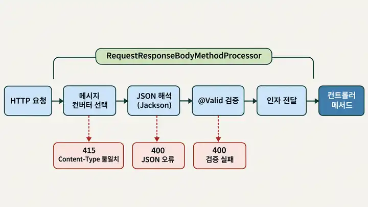
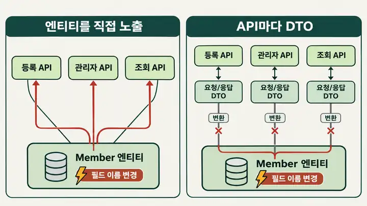
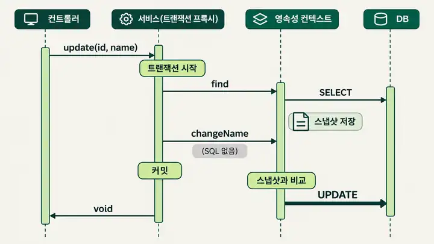

JPA 활용 2 / 01회
API 개발 기본
회원 등록·수정·조회 API를 엔티티로 먼저 만들어 보고, 요청 본문이 객체가 되는 경로와 변경 감지가 UPDATE를 만드는 순간을 실험으로 따라가며 API 스펙을 엔티티에서 떼어 내야 하는 이유를 확인한다.
오늘 끝나면 할 수 있는 것
- HTTP 요청 본문이
@RequestBody파라미터가 되기까지 메시지 컨버터 선택, Jackson의 생성자·프로퍼티 탐색, 실패 시 상태 코드(400, 415)가 어떻게 정해지는지 단계별로 설명할 수 있다. - 엔티티를 요청·응답 객체로 직접 쓸 때 생기는 문제를 대량 할당, 검증 규칙의 위치, 스펙의 결합, 순환 참조의 네 관점에서 실험 결과로 설명할 수 있다.
- 회원 등록에서
persist직후 식별자가 채워지는 이유를 시퀀스 전략과 IDENTITY 전략의 SQL 로그로 구분해 설명할 수 있다. - 회원 수정 API를 PUT·PATCH·POST 중 무엇으로 설계할지 RFC 9110의 멱등성 정의로 판단하고, 변경 감지가 UPDATE를 만드는 시점과 만들지 않는 조건을 예측할 수 있다.
- 조회 API의 응답을 DTO와 감싸는 객체로 설계하는 이유를 하위 호환성과 응답 커밋 시점의 관점에서 설명할 수 있다.
핵심 강의 → 핵심 요약 → 실무 재판단 → 적용 연습 → 이해 확인
01 핵심 강의
이 강의의 차례 · 소제목 13개
이 회차의 질문: 화면이 없는 컨트롤러는 무엇을 약속하는가
JPA 활용 1에서는 컨트롤러가 뷰 이름을 반환하고 템플릿 엔진이 HTML을 그렸다. 화면을 그리는 컨트롤러에서 엔티티는 서버 안에만 머문다. 템플릿이 엔티티의 게터를 몇 개 호출해 문자열로 바꿔 넣을 뿐, 엔티티 자체가 서버 밖으로 나가지는 않는다. 화면이 바뀌면 템플릿을 고치면 되고, 그 템플릿과 서버는 같은 배포 단위 안에서 함께 바뀐다.
API 서버는 사정이 다르다. 응답으로 나가는 JSON의 모양 자체가 외부와의 약속, 곧 API 스펙(specification)이 된다. 그 JSON을 읽는 쪽은 모바일 앱일 수도 있고, 다른 팀의 서버일 수도 있고, 이미 사용자의 휴대폰에 설치되어 서버가 마음대로 업데이트할 수 없는 옛 버전의 앱일 수도 있다. 요청도 마찬가지다. 클라이언트가 어떤 이름의 필드를 어떤 타입으로 보내야 하는지가 약속이다. 이 약속은 서버 코드와 다른 속도로 바뀐다. 서버는 하루에도 여러 번 배포할 수 있지만 클라이언트는 그렇지 않다.
이 회차는 회원 등록, 회원 수정, 회원 조회라는 단순한 세 API를 만든다. 단순한 기능이지만 각각에서 하나씩 질문이 나온다. 등록에서는 "요청 본문을 엔티티로 바로 받아도 되는가", 수정에서는 "수정은 어떤 HTTP 메서드로, 어떤 JPA 연산으로 하는가", 조회에서는 "엔티티 목록을 그대로 반환하면 무엇이 나가는가"다. 세 질문 모두 먼저 엔티티를 그대로 쓰는 방식(v1)으로 만들어 문제를 직접 겪고, 그다음 API 전용 타입을 두는 방식(v2)으로 바꾼다.
말로만 비교하지 않기 위해 실험을 했다. 환경은 JDK 21.0.13, Spring Framework 6.2.19의 spring-webmvc와 spring-test(MockMvc 단독 구성), Jackson 2.21.4, Hibernate ORM 6.6.53.Final, H2 2.3.232다. 스프링 부트 없이 MockMvc로 디스패처 서블릿을 띄워 HTTP 상태 코드와 응답 본문을 보았고, JPA 쪽은 Hibernate를 직접 부트스트랩해 SQL 로그를 보았다. Jackson 버전은 이 컴퓨터의 로컬 저장소에 있던 것을 썼으므로 스프링 부트 3.x가 관리하는 버전과 다를 수 있다. Bean Validation 구현체(Hibernate Validator)는 로컬에 없어 검증 실패의 동작은 실험 대신 Spring Framework 레퍼런스 문서로 확인했다. 본문에 붙인 로그와 메시지는 이 실험에서 나온 그대로다.
요청 본문이 자바 객체가 되기까지
먼저 @RestController부터 보자. 이 애너테이션은 @Controller와 @ResponseBody를 메타 애너테이션으로 함께 가진다. 그래서 이 클래스의 모든 핸들러 메서드는 반환값을 뷰 이름으로 해석하지 않고, 반환값 자체를 응답 본문에 쓴다. 스프링 MVC 편에서 본 대로 핸들러 메서드의 파라미터와 반환값은 각각 HandlerMethodArgumentResolver와 HandlerMethodReturnValueHandler가 처리하는데, @RequestBody 파라미터와 @ResponseBody 반환값은 둘 다 RequestResponseBodyMethodProcessor 한 클래스가 맡는다. 이 클래스는 직접 JSON을 다루지 않고 등록된 HttpMessageConverter 목록에 일을 넘긴다.
메시지 컨버터는 두 가지를 보고 고른다. 요청 헤더의 Content-Type과 파라미터의 자바 타입이다. 목록을 앞에서부터 돌며 "이 미디어 타입을 이 타입으로 읽을 수 있는가"를 묻고, 처음으로 그렇다고 답한 컨버터가 본문을 읽는다. JSON이라면 Jackson을 감싼 MappingJackson2HttpMessageConverter가 선택된다. 실험에서 같은 핸들러에 Content-Type: text/plain으로 요청을 보내면 읽을 수 있는 컨버터가 없어서 핸들러가 호출되기도 전에 실패한다.
POST /api/v2/members Content-Type: application/json {"name":"lee"}
-> 200 application/json {"id":1}
POST /api/v2/members Content-Type: text/plain name=lee
-> 415 [resolved: HttpMediaTypeNotSupportedException: Content-Type 'text/plain' is not supported]
POST /api/v2/members Content-Type: application/json {"name":
-> 400 [resolved: HttpMessageNotReadableException: JSON parse error: Unexpected end-of-input within/between Object entries]세 결과는 실패가 어느 층에서 일어났는지를 그대로 보여 준다. 415(Unsupported Media Type)는 컨버터를 고르는 단계에서, 400(Bad Request)은 컨버터가 고른 뒤 JSON 문법을 해석하는 단계에서 났다. 두 예외 모두 컨트롤러 코드에 도달하지 않았고, 스프링의 DefaultHandlerExceptionResolver가 예외를 상태 코드로 바꿨다. 이 구분은 장애를 볼 때 유용하다. 415가 쌓인다면 클라이언트가 헤더를 빠뜨린 것이고, 400의 "JSON parse error"라면 본문이 깨진 것이다. 어느 쪽이든 서비스 계층의 로그에는 아무것도 남지 않는다.
- 핸들러 결정DispatcherServlet이 URL과 HTTP 메서드로 핸들러 메서드를 찾는다. 이 단계에서 맞는 메서드가 없으면 404나 405다.
- 인자 해석기 선택파라미터에 @RequestBody가 붙어 있으므로 RequestResponseBodyMethodProcessor가 이 인자를 맡는다.
- 메시지 컨버터 선택Content-Type과 파라미터 타입으로 컨버터를 고른다. 없으면 HttpMediaTypeNotSupportedException, 415.
- 역직렬화Jackson이 JSON 토큰을 읽어 객체를 만들고 값을 채운다. 문법 오류나 타입 불일치면 HttpMessageNotReadableException, 400.
- 검증@Valid가 붙어 있으면 Bean Validation을 실행한다. 위반이 있으면 MethodArgumentNotValidException, 400.
- 핸들러 호출여기까지 통과한 객체만 컨트롤러 메서드에 인자로 들어간다.

Jackson이 객체를 채우는 규칙
역직렬화 단계를 조금 더 내려가 보자. Jackson이 JSON 객체 하나를 자바 객체로 바꾸려면 두 가지를 정해야 한다. 첫째, 객체를 무엇으로 만들 것인가. Jackson은 이것을 크리에이터(creator)라고 부른다. 인자 없는 생성자, @JsonCreator가 붙은 생성자나 팩터리 메서드, 레코드의 정규 생성자(canonical constructor)가 후보다. 둘째, 만든 객체의 어느 멤버에 어떤 JSON 필드를 넣을 것인가. Jackson은 클래스를 리플렉션으로 훑어 게터, 세터, 필드를 이름으로 묶은 프로퍼티(property) 목록을 만든다. getName()과 setName()과 name 필드는 모두 "name"이라는 하나의 논리적 프로퍼티로 모인다.
이 규칙이 엔티티에 적용되면 의외의 결과가 나온다. 아래는 JPA 엔티티를 흉내 낸 클래스다. 인자 없는 생성자는 protected이고, 필드는 모두 private이며, 세터는 하나도 없고 게터만 있다. 많은 개발자가 "세터가 없으니 외부에서 값을 넣을 수 없다"고 생각한다.
static class Member {
private Long id;
private String name;
private List<Order> orders = new ArrayList<>();
protected Member() {}
Member(Long id, String name) { this.id = id; this.name = name; }
public Long getId() { return id; }
public String getName() { return name; }
public List<Order> getOrders() { return orders; }
}
ObjectMapper om = new ObjectMapper();
Member m = om.readValue("{\"id\":999,\"name\":\"kim\"}", Member.class);
System.out.println("id=" + m.getId() + ", name=" + m.getName());id=999, name=kim세터가 없는데도 id와 name이 채워졌다. 이유는 두 가지 설정이 겹쳐서다. 하나는 MapperFeature.CAN_OVERRIDE_ACCESS_MODIFIERS로, Jackson이 리플렉션의 setAccessible(true)를 써서 protected 생성자와 private 필드에 접근하게 한다. 다른 하나는 MapperFeature.INFER_PROPERTY_MUTATORS다. 이 기능은 보이는 접근자(여기서는 public 게터)가 있는 프로퍼티라면, 그 프로퍼티의 보이지 않는 필드도 값을 넣는 데(mutator) 쓸 수 있다고 추론한다. 실험에서 om.isEnabled(MapperFeature.INFER_PROPERTY_MUTATORS)는 true였다. 즉 Jackson의 기본 설정에서 "public 게터가 있다"는 사실은 "JSON으로 그 필드를 쓸 수 있다"는 뜻이 된다.
JVM 관점에서 보면 이것은 특별한 일이 아니다. 접근 제어자는 컴파일러와 링크 단계에서 지켜지는 규칙이고, 리플렉션의 Field.setAccessible(true)는 같은 모듈 안이거나 패키지가 열려 있으면 그 검사를 끈다. 클래스패스에 올라간 애플리케이션 코드는 모두 이름 없는 모듈(unnamed module)에 속하므로 Jackson은 아무 제약 없이 이 필드들을 쓸 수 있다. JPA 제공자가 private 필드에 DB 값을 채우는 방식과 같다. 결국 private은 다른 개발자가 실수로 필드를 건드리지 못하게 하는 접근 검사 장치일 뿐, 프레임워크의 리플렉션을 막는 보안 장치가 아니다.
생성자 쪽도 확인해 보자. 인자 없는 생성자가 없고 인자 있는 생성자만 있는 일반 클래스를 같은 방식으로 읽으면 실패한다.
MismatchedInputException: Cannot construct instance of `JacksonExp$NoDefault` (although at least one Creator exists): cannot deserialize from Object value (no delegate- or property-based Creator)생성자 파라미터로 JSON 필드를 넘기려면 Jackson이 파라미터 이름을 알아야 한다. Jackson 2.x의 순수 ObjectMapper는 생성자 파라미터 이름을 스스로 읽지 않는다. 이름을 쓰려면 클래스를 -parameters로 컴파일하고 jackson-module-parameter-names 모듈(ParameterNamesModule)을 등록해야 한다. 실험에서 이 클래스를 -parameters로 컴파일해도 모듈 없이는 같은 예외가 났고, 모듈을 등록하자 읽혔다. 반면 레코드 record CreateMemberRequest(String name)는 같은 조건에서 CreateMemberRequest[name=lee]로 잘 읽혔다. 레코드는 클래스 파일의 Record 속성에 컴포넌트 이름과 타입을 기록하고, 런타임에 Class.getRecordComponents()로 읽을 수 있기 때문이다. 요청 DTO를 레코드로 쓰면 컴파일 옵션이나 모듈과 상관없이 생성자로 값을 받는 불변 객체를 만들 수 있다는 뜻이다. 스프링 부트의 Gradle 플러그인은 모든 JavaCompile 작업에 -parameters를 붙이고, spring-boot-starter-json은 jackson-module-parameter-names를 포함하며, Jackson2ObjectMapperBuilder는 클래스패스에 있는 ParameterNamesModule을 자동으로 등록한다. 그래서 부트 프로젝트에서는 일반 클래스도 파라미터 이름을 쓸 수 있지만, 그 전제가 깨진 환경이 있다는 것은 알아 둘 만하다.
모르는 필드를 만났을 때: Jackson의 기본값과 스프링의 기본값
JSON에 클래스가 모르는 필드가 있으면 어떻게 될까. 순수한 new ObjectMapper()는 실패한다. 실험에서 {"name":"kim","nickname":"k"}를 읽자 UnrecognizedPropertyException: Unrecognized field "nickname" (class JacksonExp$Member), not marked as ignorable (3 known properties: "id", "orders", "name")가 났다. DeserializationFeature.FAIL_ON_UNKNOWN_PROPERTIES의 Jackson 기본값이 true이기 때문이다.
그런데 스프링 MVC 안에서는 결과가 다르다. 스프링의 MappingJackson2HttpMessageConverter는 ObjectMapper를 직접 만들지 않고 Jackson2ObjectMapperBuilder로 만든다. 이 빌더의 Javadoc은 Jackson 기본값 가운데 MapperFeature.DEFAULT_VIEW_INCLUSION과 DeserializationFeature.FAIL_ON_UNKNOWN_PROPERTIES를 끈다고 명시한다. 스프링 부트 3.x의 Jackson 자동 구성도 이 빌더로 ObjectMapper를 만든다. 그래서 MockMvc 실험에서 오타가 난 필드 이름 {"nmae":"typo"}를 보내자 예외 없이 200이 나왔고, 저장된 회원의 이름은 null이었다. 모르는 필드를 무시하는 것은 API를 진화시키기에는 편하다. 클라이언트가 새 필드를 먼저 보내기 시작해도 옛 서버가 깨지지 않는다. 대신 오타는 조용히 사라진다. 이 결과가 다음 절에서 검증을 반드시 두어야 하는 이유 중 하나다.
| 입력 JSON | 순수 ObjectMapper | 스프링 MVC 컨버터 |
|---|---|---|
{"id":999,"name":"kim"} → 게터만 있는 클래스 | id=999, name=kim으로 채움 | 같음(바인딩된 엔티티 id=999) |
{"name":"kim","nickname":"k"} | UnrecognizedPropertyException | nickname을 무시하고 200 |
{"nmae":"typo"} | UnrecognizedPropertyException | name=null인 객체로 200 |
{"name": (깨진 JSON) | 파싱 예외 | HttpMessageNotReadableException, 400 |
회원 등록 API v1: 엔티티를 요청 본문으로 받으면
이제 첫 번째 회원 등록 API를 만들자. 가장 짧은 방법은 요청 본문을 회원 엔티티로 바로 받는 것이다. 이 회차에서 쓰는 회원 엔티티는 JPA 활용 1에서 만든 것과 같은 모양에 주문과의 양방향 연관관계를 더한 것이다. 이름이 비어 있으면 안 된다는 규칙을 표현하려고 엔티티 필드에 @NotEmpty를 붙였다. 이 애너테이션이 엔티티에 붙어 있다는 사실 자체가 뒤에서 문제가 된다.
@Entity
public class Member {
@Id @GeneratedValue
@Column(name = "member_id")
private Long id;
@NotEmpty // v1에서만 필요한 검증. 엔티티에 붙인 것이 문제다
private String name;
@Embedded
private Address address;
@OneToMany(mappedBy = "member")
private List<Order> orders = new ArrayList<>();
protected Member() {}
public Member(String name, Address address) {
this.name = name;
this.address = address;
}
public void changeName(String name) {
this.name = name;
}
public Long getId() { return id; }
public String getName() { return name; }
public Address getAddress() { return address; }
public List<Order> getOrders() { return orders; }
}@RestController
public class MemberApiV1 {
private final MemberService memberService;
public MemberApiV1(MemberService memberService) {
this.memberService = memberService;
}
@PostMapping("/api/v1/members")
public CreateMemberResponse saveMemberV1(@RequestBody @Valid Member member) {
Long id = memberService.join(member);
return new CreateMemberResponse(id);
}
@GetMapping("/api/v1/members")
public List<Member> membersV1() {
return memberService.findMembers();
}
}
public record CreateMemberResponse(Long id) {}코드는 짧고 잘 동작하는 것처럼 보인다. {"name":"kim"}을 보내면 회원이 저장되고 {"id":1}이 돌아온다. 문제는 이 코드가 "어떤 요청이 허용되는가"를 정하는 일을 엔티티 클래스에 떠넘겼다는 데 있다. 하나씩 보자.
문제 1: 클라이언트가 보내지 말아야 할 필드도 바인딩된다
앞 절에서 확인한 대로 Jackson은 public 게터가 있는 모든 프로퍼티를 쓸 수 있다. 엔티티의 게터는 화면과 다른 계층에서 읽으라고 만든 것인데, 그 게터 때문에 id와 orders까지 요청으로 채울 수 있게 되었다. MockMvc 실험에서 {"id":999,"name":"kim","nickname":"k"}를 보내자 컨트롤러에 들어온 엔티티는 id=999였다. 웹 보안에서 대량 할당(mass assignment)이라고 부르는 문제다. 서버가 의도하지 않은 필드를 클라이언트가 채울 수 있다.
이 엔티티가 데이터베이스까지 가면 무슨 일이 일어날까. 식별자가 채워진 채로 em.persist()에 들어가면 Hibernate는 이 객체를 새 엔티티가 아니라 이미 저장된 적이 있는 준영속 엔티티로 판단한다. 실험 결과는 jakarta.persistence.EntityExistsException: detached entity passed to persist: jpa.Member였다. 이번에는 예외로 끝났으니 오히려 다행이다. 저장 메서드가 식별자 유무에 따라 persist와 merge를 고르는 구조라면 결과가 달라진다. 다음 권에서 다룰 Spring Data JPA의 SimpleJpaRepository.save()가 그렇다. 3.5.13 버전의 바이트코드를 보면 isNew()가 참이면 persist, 거짓이면 merge를 부르고, 이 엔티티처럼 @Version 속성이 없고 식별자 타입이 래퍼 타입이면 isNew()는 식별자가 null인지로 판단한다. 이 경우 id=999는 999번 회원을 조회해 요청의 값으로 덮어쓰는 병합이 된다. JPA 활용 1에서 본 대로 병합은 요청에 없던 필드를 null로 덮는다. 등록 API가 남의 회원 정보를 지우는 API로 바뀌는 셈이다.
문제 2: 검증 규칙이 엔티티에 하나밖에 없다
회원 엔티티의 name에 @NotEmpty를 붙인 이유는 이 등록 API 때문이다. 그런데 엔티티는 등록 API 하나만의 것이 아니다. 관리자용 등록 API는 이름 없이 임시 회원을 먼저 만들 수도 있고, 외부 시스템에서 회원을 일괄로 가져오는 API는 이름 규칙이 다를 수도 있다. 엔티티에 붙인 검증 애너테이션은 그 엔티티를 쓰는 모든 경로에 같은 규칙을 강요한다. Bean Validation의 검증 그룹(groups)으로 나눌 수는 있지만, 그러면 엔티티가 "어느 API에서 어떤 규칙"을 알게 된다. 도메인 모델이 표현 계층의 사정을 알게 되는 것이다. 계층의 의존 방향을 거꾸로 만든다는 점에서 이것은 단순한 취향 문제가 아니다.
또 하나 기억할 점은 Hibernate가 Bean Validation과 통합되어 있다는 것이다. Bean Validation 구현체가 클래스패스에 있으면 Hibernate는 엔티티를 저장하거나 수정하기 직전에도 엔티티의 제약을 검증한다. API용으로 붙인 @NotEmpty가 저장 시점의 규칙도 된다는 뜻이다. API 규칙이 바뀔 때마다 저장 계층의 동작까지 함께 바뀐다.
문제 3: 엔티티를 바꾸면 API 스펙이 바뀐다
엔티티의 필드 이름은 곧 JSON 필드 이름이다. 어느 날 도메인 용어를 정리하며 name을 username으로 바꾸면, 그 순간 등록 API의 요청 스펙이 바뀐다. 옛 클라이언트가 보내는 {"name":"kim"}은 앞에서 본 스프링의 기본값 때문에 조용히 무시되고, 이름이 null인 회원이 만들어지거나 검증에 걸려 400이 된다. 컴파일러는 아무 경고도 하지 않는다. 자바 코드의 이름 변경은 리팩터링 도구가 모든 참조를 따라가 바꿔 주지만, JSON 필드 이름은 문자열이라서 클라이언트 쪽까지 따라가지 못한다.
반대 방향도 문제다. 엔티티는 JPA의 요구 때문에 인자 없는 생성자를 가져야 하고, 연관관계와 지연 로딩 때문에 구조가 정해진다. 여기에 JSON 매핑을 위한 @JsonIgnore, @JsonProperty 같은 애너테이션이 더해지면, 엔티티 하나가 데이터베이스 테이블 매핑과 여러 API의 JSON 매핑을 동시에 떠맡는다. 이 상태에서 한 API를 위해 붙인 @JsonIgnore는 같은 엔티티를 반환하는 다른 API의 응답에서도 그 필드를 지운다.

회원 등록 API v2: 요청 전용 DTO
해결책은 API의 요청과 응답을 위한 타입을 따로 두는 것이다. 데이터 전송 객체(DTO, Data Transfer Object)라고 부른다. 등록 요청에 필요한 것은 이름 하나뿐이므로 요청 DTO도 이름 하나만 갖는다. 아래 코드에서는 DTO를 컨트롤러 안의 중첩 레코드로 두었다. 이 타입들이 이 컨트롤러의 API 스펙이라는 점을 코드 위치로 드러내기 위해서다.
@RestController
@RequestMapping("/api/v2/members")
public class MemberApiV2 {
private final MemberService memberService;
public MemberApiV2(MemberService memberService) {
this.memberService = memberService;
}
// ---- 요청·응답 스펙: 이 API 전용 타입 ----
public record CreateMemberRequest(@NotEmpty String name) {}
public record UpdateMemberRequest(@NotEmpty String name) {}
public record UpdateMemberResponse(Long id, String name) {}
public record MemberDto(String name) {}
public record Result<T>(int count, T data) {}
@PostMapping
public ResponseEntity<CreateMemberResponse> save(@RequestBody @Valid CreateMemberRequest request) {
Member member = new Member(request.name(), null);
Long id = memberService.join(member);
return ResponseEntity.created(URI.create("/api/v2/members/" + id))
.body(new CreateMemberResponse(id));
}
// 수정·조회 핸들러는 뒤에서 본다
}달라진 점을 위의 세 문제에 맞춰 보자. 첫째, 클라이언트가 채울 수 있는 필드는 CreateMemberRequest에 있는 name 하나뿐이다. {"id":999,"name":"kim"}을 보내도 id는 스프링의 기본 설정에 따라 무시되고, 엔티티는 컨트롤러가 생성자로 직접 만든다. 대량 할당의 통로가 구조적으로 막혔다. 둘째, @NotEmpty는 이 요청 타입에만 붙어 있다. 다른 API가 다른 규칙을 원하면 다른 요청 타입을 만들면 된다. 엔티티는 검증 애너테이션에서 자유로워진다. 셋째, 엔티티의 name을 username으로 바꾸면 new Member(request.name(), null) 줄이 컴파일 오류가 난다. 스펙과 엔티티의 연결이 문자열이 아니라 자바 코드가 되었으므로, 변경의 영향이 컴파일러의 검사 범위 안으로 들어온다.
대가도 있다. 클래스가 늘고, 요청을 엔티티로 바꾸는 코드를 직접 써야 한다. 그러나 이 변환 코드는 단순한 중복이 아니라 "외부의 약속"과 "내부의 모델"이 만나는 경계다. 경계에서는 번역이 일어나는 것이 정상이다. 레코드를 쓰면 DTO 하나가 한 줄로 끝나므로 비용도 크지 않다. 레코드는 컴파일러가 private final 필드, 정규 생성자, 컴포넌트 이름과 같은 접근자 메서드, equals·hashCode·toString을 만들어 주는 불변 클래스다. Jackson은 레코드를 인식해 역직렬화에는 정규 생성자를, 직렬화에는 name() 같은 접근자를 쓴다. 실험의 v2 조회 응답 {"count":4,"data":[{"name":"kim"}, ...]}이 레코드 두 개를 직렬화한 결과다.
등록 성공은 200인가 201인가
v2에서는 응답 상태를 201(Created)로 바꾸고 Location 헤더를 붙였다. RFC 9110 9.3.3절은 POST로 하나 이상의 자원이 만들어졌다면 오리진 서버가 201 응답과 함께 주된 자원을 가리키는 Location 헤더를 보내야 한다(SHOULD)고 적는다. MUST가 아니므로 200으로 응답한다고 규약 위반은 아니고, 실제로 많은 API가 200에 식별자를 담아 돌려준다. 다만 201과 Location을 쓰면 클라이언트가 응답 본문 형식을 몰라도 새 자원의 주소를 알 수 있다. 어느 쪽을 택하든 중요한 것은 한 서비스 안에서 일관되게 쓰는 것이다.
persist 직후 식별자가 이미 있는 이유
등록 핸들러는 memberService.join(member)가 돌려준 식별자를 응답에 담는다. 서비스 쪽 코드는 JPA 활용 1에서 본 것과 같은 구조다.
@Service
@Transactional(readOnly = true)
public class MemberService {
private final MemberRepository memberRepository;
public MemberService(MemberRepository memberRepository) {
this.memberRepository = memberRepository;
}
@Transactional
public Long join(Member member) {
memberRepository.save(member); // persist: 이 순간 식별자가 채워진다
return member.getId();
}
@Transactional
public void update(Long id, String name) {
Member member = memberRepository.findOne(id); // 영속 상태로 조회
if (member == null) {
throw new IllegalArgumentException("회원이 없습니다: " + id);
}
member.changeName(name); // 값만 바꾼다. save 호출 없음
}
public Member findOne(Long id) {
return memberRepository.findOne(id);
}
public List<Member> findMembers() {
return memberRepository.findAll();
}
}여기서 질문 하나. join은 트랜잭션이 커밋되기 전에 member.getId()를 반환한다. 아직 INSERT가 데이터베이스에 반영되지 않았을 수도 있는데 식별자는 어디서 왔을까. 답은 식별자 생성 전략에 따라 다르다. Hibernate를 직접 띄워 두 전략의 SQL 로그를 찍어 보았다. @GeneratedValue만 붙이면 전략은 AUTO이고, Hibernate 6.6은 H2에서 이것을 시퀀스로 처리했다. 비교용으로 GenerationType.IDENTITY를 쓴 엔티티도 하나 두었다. 실험용 회원 엔티티는 식별자 컬럼 이름을 따로 지정하지 않아서, 아래 로그와 뒤의 수정 실험 로그에는 member_id 대신 id로 나온다.
Hibernate: create sequence Member_SEQ start with 1 increment by 50
Hibernate: create table IdMember (id bigint generated by default as identity, name varchar(255), primary key (id))
---- 1. join (AUTO)
before persist id=null
Hibernate: select next value for Member_SEQ
after persist id=1
commit
Hibernate: insert into Member (city,street,zipcode,name,id) values (?,?,?,?,?)
---- 1b. join (IDENTITY)
Hibernate: insert into IdMember (name,id) values (?,default)
after persist id=1
commit시퀀스 전략에서는 persist가 시퀀스의 다음 값을 받아 엔티티에 넣고, INSERT는 커밋 시점의 플러시까지 미룬다. 식별자는 데이터베이스가 아니라 시퀀스에서 미리 받아 온 값이라서 행을 넣기 전에도 알 수 있다. increment by 50은 Hibernate가 시퀀스를 한 번 호출할 때마다 50개의 식별자를 메모리에서 나눠 쓰기 위한 설정이다(allocationSize의 기본값이 50이다). IDENTITY 전략에서는 사정이 다르다. 식별자를 데이터베이스가 행을 넣을 때 정하므로, Hibernate는 식별자를 알기 위해 persist 순간에 INSERT를 바로 실행하고 데이터베이스가 정한 식별자 값을 돌려받아 엔티티에 넣는다. 로그에서 INSERT가 commit 출력보다 먼저 나온 것이 그 증거다. 어느 쪽이든 persist가 끝나면 엔티티에 식별자가 있으므로, join은 커밋을 기다리지 않고 식별자를 돌려줄 수 있다.
트랜잭션의 경계도 함께 보자. join에는 @Transactional이 붙어 있으므로 컨트롤러가 호출하는 것은 서비스의 프록시다. 프록시는 트랜잭션을 시작하고(이때 커넥션 풀에서 커넥션을 하나 얻는다), 실제 join을 호출하고, 메서드가 정상적으로 끝나면 커밋한다. 커밋 직전에 Hibernate가 플러시해서 시퀀스 전략의 INSERT가 이때 나간다. 그다음 컨트롤러가 응답 DTO를 만들고 Jackson이 직렬화한다. 따라서 클라이언트가 {"id":1}을 받았을 때 그 회원은 이미 커밋된 상태다. 반대로 커밋 중에 제약 조건 위반 같은 예외가 나면 컨트롤러는 식별자를 받지 못하고, 그 예외는 예외 처리기를 거쳐 오류 응답이 된다.
회원 수정 API: PUT, PATCH, POST 중 무엇인가
수정 API를 만들기 전에 HTTP 메서드부터 정하자. 선택지는 PUT, PATCH, POST다. 셋을 가르는 기준은 RFC 9110이 정의하는 메서드 의미론(method semantics)이다.
RFC 9110 9.3.4절에 따르면 PUT은 대상 자원의 상태를 요청에 담긴 표현(representation)의 상태로 만들거나 교체하라는 요청이다. 핵심 단어는 교체(replace)다. 요청 본문이 그 자원의 새 상태 전체라는 뜻이다. 9.2.2절은 같은 요청을 여러 번 보냈을 때 서버에 의도한 효과가 한 번 보낸 것과 같은 메서드를 멱등(idempotent)이라고 정의하고, PUT과 DELETE와 안전한 메서드(GET, HEAD, OPTIONS, TRACE)가 멱등이라고 적는다. "이름을 lee로 바꾼다"는 요청은 열 번 보내도 결과가 같다. 반면 RFC 5789가 정의한 PATCH는 본문이 새 상태가 아니라 자원을 어떻게 바꿀지에 대한 지시의 집합이고, 이 RFC는 PATCH가 안전하지도 멱등이지도 않다고 적는다(멱등하게 보낼 수는 있다는 단서와 함께). POST는 대상 자원이 요청을 자기 의미대로 처리하는 메서드라서, 멱등이라는 보장이 없다.
멱등성이 왜 중요한가. 네트워크에서는 요청을 보냈는데 응답을 받지 못하는 일이 생긴다. 이때 클라이언트는 서버가 요청을 처리했는지 알 수 없다. 처리하고 응답만 잃었을 수도 있고, 처리하기 전에 연결이 끊겼을 수도 있다. RFC 9110은 멱등 메서드의 요청이라면 클라이언트가 연결 실패 뒤 자동으로 재시도할 수 있다고 설명한다. 같은 요청을 한 번 더 보내도 결과가 같기 때문이다. "포인트를 100 더한다" 같은 요청은 그렇지 않다. 두 번 처리되면 200이 더해진다. 그래서 "더한다"는 POST나 PATCH의 몫이고, "이 값으로 만든다"는 PUT의 몫이다.
| 메서드 | 본문의 의미 | 멱등 | 회원 이름 수정에 쓰면 |
|---|---|---|---|
| PUT | 자원의 새 상태 전체(교체) | 예 | 수정 가능한 필드가 이름뿐이라면 본문 {"name":"lee"}가 곧 새 상태다 |
| PATCH | 자원을 바꾸는 지시(부분 수정) | 보장 안 됨 | 필드가 여럿인데 일부만 바꿀 때 자연스럽다 |
| POST | 대상 자원이 정한 처리 | 보장 안 됨 | "비밀번호 초기화" 같은 동작형 API에 맞다 |
이 회차의 회원 수정 API는 PUT으로 만든다. 수정 요청 DTO에 이름 하나만 있으므로 "수정 가능한 상태 전체"가 곧 이름이고, 같은 요청의 반복은 같은 결과를 낸다. 주의할 점은 PUT의 의미를 지키려면 요청에 없는 필드를 어떻게 다룰지 정해야 한다는 것이다. 회원에 이름과 주소가 모두 수정 가능하다면, PUT 요청에 주소가 빠졌을 때 의미상으로는 주소를 비우는 것이 맞다. 실무에서 PUT 요청의 빠진 필드를 "바꾸지 않는다"로 처리하는 API가 많지만, 그것은 사실상 PATCH의 동작이다. 어떤 의미로 쓰는지를 API 문서에 명시하는 것이 최소한의 약속이다.
RFC 9110 9.3.4절은 PUT으로 기존 표현을 수정했다면 200(OK)이나 204(No Content)를, 새로 만들었다면 201을 보내야 한다고 적는다. 이 회차의 수정 API는 수정된 회원의 식별자와 이름을 본문에 담아 200을 돌려준다.
@PutMapping("/{id}")
public UpdateMemberResponse update(@PathVariable("id") Long id,
@RequestBody @Valid UpdateMemberRequest request) {
memberService.update(id, request.name()); // 명령: 반환값 없음
Member member = memberService.findOne(id); // 조회: 따로 한다
return new UpdateMemberResponse(member.getId(), member.getName());
}수정 요청 DTO UpdateMemberRequest는 등록 요청 DTO와 지금은 모양이 같다. 그래도 하나로 합치지 않는다. 등록과 수정은 앞으로 다르게 진화할 가능성이 높은 별개의 스펙이다. 예를 들어 등록에는 약관 동의 필드가 추가되고 수정에는 추가되지 않을 수 있다. 같은 타입을 공유하면 한쪽의 변경이 다른 쪽 스펙을 바꾼다. 엔티티를 공유할 때 생긴 문제가 DTO 사이에서 다시 생기는 것이다.
수정은 변경 감지로: UPDATE가 만들어지는 순간
서비스의 update에는 save나 update 같은 저장 호출이 없다. 영속 상태의 엔티티를 조회해 값을 바꿨을 뿐이다. 그래도 UPDATE가 나가는 이유는 JPA 기본편과 JPA 활용 1에서 본 변경 감지(dirty checking) 때문이다. 영속성 컨텍스트는 엔티티를 처음 관리하기 시작할 때 그 상태의 복사본인 스냅샷(snapshot)을 따로 보관한다. 플러시 시점에 관리 중인 엔티티 각각을 스냅샷과 필드 단위로 비교하고, 달라진 엔티티에 대해 UPDATE를 만든다. 같은 엔티티에 대해 네 가지 경우를 실험했다.
---- 2. update
Hibernate: select m1_0.id,m1_0.city,m1_0.street,m1_0.zipcode,m1_0.name from Member m1_0 where m1_0.id=?
changed, commit
Hibernate: update Member set city=?,street=?,zipcode=?,name=? where id=?
---- 3. update same value
Hibernate: select m1_0.id,m1_0.city,m1_0.street,m1_0.zipcode,m1_0.name from Member m1_0 where m1_0.id=?
changed, commit
---- 4. update then find in same EM
Hibernate: select m1_0.id,m1_0.city,m1_0.street,m1_0.zipcode,m1_0.name from Member m1_0 where m1_0.id=?
same instance=true, name=park
Hibernate: update Member set city=?,street=?,zipcode=?,name=? where id=?
---- 5. find in new EM
Hibernate: select m1_0.id,m1_0.city,m1_0.street,m1_0.zipcode,m1_0.name from Member m1_0 where m1_0.id=?
name=park
---- 6. detached change
contains=false한 줄씩 읽어 보자. 2번에서 UPDATE는 changeName을 호출한 때가 아니라 changed, commit 출력 뒤, 즉 커밋 직전의 플러시에서 나갔다. 이름만 바꿨는데 UPDATE 문은 city, street, zipcode, name을 모두 SET한다. Hibernate는 기본적으로 엔티티마다 모든 컬럼을 갱신하는 UPDATE 문을 미리 만들어 두고 재사용한다. 어떤 필드가 바뀌든 SQL 문자열이 같으므로 JDBC의 PreparedStatement를 재사용하기 쉽다. 바뀐 컬럼만 SET하고 싶다면 Hibernate의 @DynamicUpdate를 엔티티에 붙일 수 있지만, 그러면 플러시마다 SQL을 새로 만들어야 한다.
3번은 이미 lee인 이름을 다시 lee로 바꿨다. SELECT만 있고 UPDATE가 없다. 변경 감지는 "세터가 호출되었는가"가 아니라 "스냅샷과 값이 다른가"를 본다. 그래서 같은 값을 다시 넣는 PUT 요청은 데이터베이스에 쓰기를 만들지 않는다. 멱등한 요청이 실제로도 부작용 없이 끝나는 장면이다. 4번은 같은 영속성 컨텍스트 안에서 이름을 바꾼 뒤 같은 식별자로 다시 find한 경우다. 두 번째 find는 SQL 없이 1차 캐시의 같은 인스턴스를 돌려줬고(same instance=true), 이름은 이미 바뀐 park였다. 5번은 새 EntityManager에서 조회한 경우로, 영속성 컨텍스트가 새것이므로 SELECT가 다시 나간다. 6번은 영속성 컨텍스트가 닫힌 뒤 손에 남은 엔티티의 이름을 바꾼 경우다. 이 객체는 준영속(detached) 상태라서 어떤 영속성 컨텍스트도 관리하지 않으며(contains=false), 아무 SQL도 나가지 않는다. 바뀐 값은 메모리에만 있다가 사라진다.

읽기 전용 트랜잭션에 수정 메서드를 넣으면
서비스 클래스에는 @Transactional(readOnly = true)가 붙어 있고, 쓰기 메서드에만 @Transactional을 다시 붙였다. 만약 update에 @Transactional을 빠뜨리면 어떻게 될까. 메서드는 클래스의 읽기 전용 트랜잭션 안에서 실행된다. Spring Framework 6.2.19의 HibernateJpaDialect.beginTransaction을 javap로 열어 보면, 트랜잭션 정의가 읽기 전용일 때 Hibernate 세션의 플러시 모드를 FlushMode.MANUAL로 바꾸고, 그 트랜잭션을 위해 EntityManager를 새로 연 경우(OSIV가 꺼져 있을 때처럼)에는 setDefaultReadOnly(true)도 호출한다. 플러시 모드가 MANUAL이면 커밋 직전의 자동 플러시가 일어나지 않고, 기본 읽기 전용이면 이후 조회한 엔티티를 읽기 전용으로 다뤄 변경 감지 대상에서 뺀다. OSIV로 EntityManager가 이미 열려 있으면 플러시 모드만 바뀌지만, 커밋 때 플러시가 일어나지 않는 것은 같다. 결과적으로 changeName은 아무 예외 없이 실행되고, 응답도 정상으로 나가고, 데이터베이스에는 아무것도 바뀌지 않는다. 오류가 나지 않는 실패라서 찾기 어렵다. 쓰기 메서드의 @Transactional은 의례가 아니라 플러시 모드를 결정하는 설정이다.
명령과 조회를 나눈다
수정 핸들러는 memberService.update()를 호출한 다음, 응답을 만들기 위해 memberService.findOne()을 다시 호출한다. update가 수정된 엔티티를 바로 돌려주면 호출 한 번으로 끝날 텐데, 왜 이렇게 나눴을까.
이것은 명령-조회 분리(Command-Query Separation) 원칙을 따른 것이다. 메서드는 상태를 바꾸는 명령이거나 값을 돌려주는 조회 중 하나여야 하고, 둘을 겸하지 않는다는 원칙이다. update가 void이면 이 메서드를 읽는 사람은 "이 메서드는 상태를 바꾼다"는 것만 알면 된다. 반대로 조회 메서드는 몇 번을 호출해도 상태를 바꾸지 않는다는 믿음 위에서 자유롭게 재사용할 수 있다. join이 식별자를 반환하는 것은 이 원칙의 흔한 예외다. 새로 만든 대상을 가리킬 방법이 식별자밖에 없기 때문이다. 식별자는 상태가 아니라 이름표라서, 반환해도 명령과 조회가 섞이지 않는다.
엔티티를 반환하지 않는 데는 JPA 쪽 이유도 있다. 서비스의 트랜잭션이 끝나면 그 엔티티가 어떤 상태인지는 설정에 따라 달라진다. 영속성 컨텍스트가 트랜잭션과 함께 닫힌다면 반환된 엔티티는 준영속이다. 이 엔티티의 지연 로딩 연관관계를 컨트롤러에서 건드리면 데이터베이스에 갈 수 없어 예외가 난다. 반면 스프링 부트는 기본값으로 OSIV(Open Session In View)를 켜 두어, 영속성 컨텍스트를 요청이 끝날 때까지 열어 둔다. 이 경우 컨트롤러에서도 지연 로딩이 되고 엔티티는 여전히 관리 상태다. 트랜잭션 밖에서 바꾼 값은 그 자리에서는 플러시되지 않지만, 같은 요청 안에서 다른 쓰기 트랜잭션이 시작되면 그 트랜잭션의 플러시에 섞여 의도하지 않게 반영될 수 있다. 어느 설정이든 트랜잭션 밖으로 나간 엔티티는 "읽을 수는 있을 수도 있지만 바꿔서는 안 되는 객체"가 된다. 서비스가 식별자나 DTO만 돌려주면 이런 애매한 객체가 컨트롤러로 새어 나가지 않는다. OSIV와 커넥션 점유의 관계는 이 권의 5회에서 자세히 다룬다.
나누면 조회가 한 번 더 일어나는 것은 아닐까. 실험의 4번과 5번이 답이다. 같은 영속성 컨텍스트 안이라면 두 번째 조회는 1차 캐시에서 끝나고 SQL이 나가지 않는다. OSIV가 켜져 있으면 update와 findOne이 요청 하나의 같은 영속성 컨텍스트를 쓰므로 4번과 같은 상황이다. OSIV를 끄면 두 메서드는 각자의 트랜잭션과 영속성 컨텍스트를 가지므로 5번처럼 SELECT가 하나 더 나간다. 기본 키 조회 한 번이고, 이 비용으로 명령과 조회의 경계를 얻는다. 수정 API가 초당 수천 번 호출되는 핫스팟이 아니라면 대부분 충분히 싼 거래다.
회원 조회 API v1: 엔티티 목록을 그대로 반환하면
이제 조회 API다. v1은 서비스가 돌려준 List<Member>를 그대로 반환한다. 스프링은 반환값을 Jackson에 넘기고, Jackson은 엔티티의 public 게터를 모두 호출해 JSON을 만든다. MockMvc 실험에서 회원 네 명을 저장한 뒤 v1과 v2를 호출한 결과는 이렇다.
GET /api/v1/members -> 200 application/json
[{"id":999,"name":"kim","orders":[]},{"id":1,"name":"lee","orders":[]},{"id":2,"name":null,"orders":[]},{"id":1000,"name":"park","orders":[]}]
GET /api/v2/members -> 200 application/json
{"count":4,"data":[{"name":"kim"},{"name":"lee"},{"name":null},{"name":"park"}]}v1 응답에는 클라이언트가 요청하지 않은 orders가 들어 있다. 게터가 있으니 나간 것이다. 실제 JPA 엔티티라면 주소 같은 임베디드 값, 연관된 엔티티까지 모두 같은 방식으로 나간다. 이름 null인 회원(2번)은 앞에서 오타 난 요청이 만든 것이다. 데이터 문제도 그대로 API 밖으로 드러난다.
필요 없는 필드를 숨기려고 엔티티에 @JsonIgnore를 붙이는 방법이 먼저 떠오른다. 그러나 엔티티는 여러 API가 공유한다. 회원 목록 API는 주문을 숨기고 싶고, 회원 상세 API는 주문을 보여 주고 싶다면 하나의 애너테이션으로는 둘을 동시에 만족시킬 수 없다. 앞에서 본 스펙 결합 문제가 응답 쪽에서 똑같이 생긴다.
양방향 연관관계와 이미 커밋된 응답
더 심각한 문제는 양방향 연관관계다. 회원은 orders를, 주문은 member를 가진다. Jackson이 회원을 직렬화하면 orders의 각 주문을 직렬화하고, 주문의 member에서 다시 같은 회원을 직렬화하고, 그 회원의 orders로 돌아간다. 객체 그래프에 순환이 있는데 Jackson은 기본적으로 이미 방문한 객체를 기억하지 않으므로 끝나지 않는다. 회원 1000번에 주문 하나를 연결하고 같은 API를 다시 호출했다.
경고: Ignoring exception, response committed already: org.springframework.http.converter.HttpMessageNotWritableException: Could not write JSON: Document nesting depth (1001) exceeds the maximum allowed (1000, from `StreamWriteConstraints.getMaxNestingDepth()`)
GET v1 with back-ref -> 200 application/json [{"id":999,"name":"kim","orders":[]}, ... ,{"id":1000,"name":"park","orders":[{"id":10,"member":{"id":1000,"name":"park","orders":[{"id":10,"member":{ ...두 가지를 읽어야 한다. 첫째, 이 버전의 Jackson은 스택이 넘칠 때까지 재귀하지 않고, 출력 문서의 중첩 깊이가 StreamWriteConstraints의 최대값 1000을 넘는 순간 예외를 던졌다. 회원 객체, orders 배열, 주문 객체가 한 바퀴에 세 단계씩 깊이를 더하므로, 응답 본문에 "member"가 333번 나온 뒤 멈췄다.
둘째, 상태 코드가 200이다. 예외가 났는데 클라이언트는 성공 응답을 받았다. 응답 본문은 약 18KB에서 끊겨 "member":}처럼 문법이 깨진 JSON이었다. 스프링의 로그가 이유를 말해 준다. "response committed already". 서블릿 응답은 버퍼를 갖는다. 본문이 버퍼에 쌓이는 동안에는 상태 코드와 헤더를 바꿀 수 있지만, 버퍼가 차서 내용이 한 번 내보내지면 응답은 커밋(committed)된 상태가 된다. 상태 줄과 헤더는 본문보다 먼저 나가야 하므로, 커밋된 뒤에는 상태 코드를 바꿀 방법이 없다. 이 실험의 MockHttpServletResponse는 버퍼 크기가 4096바이트로 초기화되는데(javap로 생성자를 열어 확인했다), Jackson이 그보다 훨씬 많은 바이트를 쓴 뒤에 예외가 났으므로 이미 커밋된 뒤였다. DefaultHandlerExceptionResolver는 500으로 바꾸려다가 응답이 커밋된 것을 보고 예외를 무시했다. 실제 서블릿 컨테이너에서도 같은 규칙이 적용된다. 버퍼 크기는 컨테이너 설정에 따라 다르지만, 직렬화 중 예외가 버퍼를 넘긴 뒤에 나면 클라이언트는 성공 상태 코드와 깨진 본문을 받는다.
이 결과는 엔티티 직렬화의 실패가 서버 쪽 예외 로그로만 끝나지 않고, 클라이언트에 "200인데 파싱할 수 없는 JSON"이라는 가장 다루기 어려운 형태로 도달할 수 있음을 보여 준다. 실제 JPA 엔티티에서는 여기에 지연 로딩이 더해진다. 직렬화 도중 게터가 프록시를 건드리면 그때마다 SQL이 나가거나, 영속성 컨텍스트가 닫혀 있으면 예외가 나거나, 초기화되지 않은 Hibernate 프록시 객체 자체를 Jackson이 직렬화하려다 실패한다. 이 문제는 다음 회차(2회)에서 지연 로딩과 조회 성능 최적화를 다루며 직접 재현한다. 양방향 관계 한쪽에 @JsonIgnore를 붙이면 순환은 끊기지만, 앞에서 말한 대로 그 결정이 엔티티를 쓰는 모든 API에 적용된다.
응답을 DTO와 감싸는 객체로 설계하는 이유
v2 조회 API는 엔티티를 응답용 DTO로 바꾸고, 그 목록을 다시 Result라는 객체로 감싼다.
@GetMapping
public Result<List<MemberDto>> members() {
List<MemberDto> data = memberService.findMembers().stream()
.map(m -> new MemberDto(m.getName()))
.toList();
return new Result<>(data.size(), data);
}DTO로 바꾸는 이유는 앞에서 본 문제의 정반대다. 응답에 무엇이 나가는지를 엔티티의 게터 목록이 아니라 MemberDto의 컴포넌트 목록이 정한다. 엔티티에 필드가 추가되어도 응답은 바뀌지 않고, 순환 참조가 생길 여지도 없다. 변환은 m.getName()을 부르는 시점에 일어나므로, 이 시점에 엔티티가 어떤 상태인지가 중요하다. 지금은 이름이라는 단순 필드만 읽으므로 문제가 없지만, 변환 중에 지연 로딩 연관관계를 읽으면 그때마다 SQL이 나갈 수 있다. 이것이 2회부터 다룰 N+1 문제의 출발점이다.
감싸는 이유는 하위 호환성이다. 응답 최상위가 JSON 배열이면 그 배열에는 원소 말고 다른 것을 넣을 자리가 없다. 나중에 전체 건수, 다음 페이지 커서, 서버 시각 같은 정보를 함께 주고 싶어지면 최상위를 객체로 바꿔야 하고, 그것은 배열을 기대하던 모든 클라이언트를 깨뜨리는 변경이다. 처음부터 {"count":4,"data":[...]}처럼 객체로 감싸 두면 새 정보는 필드 하나를 추가하는 것으로 끝난다. 앞에서 본 대로 스프링과 Jackson의 기본 설정은 모르는 필드를 무시하므로, 같은 설정을 쓰는 클라이언트는 새 필드가 생겨도 깨지지 않는다. 필드를 더하는 변경은 호환되고, 모양을 바꾸는 변경은 호환되지 않는다는 것이 API 진화의 기본 규칙이다.
Result<T>는 제네릭 레코드다. 자바의 제네릭은 컴파일 후 타입 정보가 지워지므로(type erasure) 런타임에 Result 인스턴스는 자기가 Result<List<MemberDto>>라는 사실을 모른다. 그래도 직렬화는 문제가 없다. Jackson은 직렬화할 때 필드에 실제로 들어 있는 객체의 런타임 타입을 보고 직렬화기를 고르기 때문이다. 반대로 클라이언트 쪽에서 이 JSON을 다시 Result<List<MemberDto>>로 역직렬화하려면 지워진 타입 인자를 TypeReference 같은 방법으로 따로 알려 줘야 한다. 서버 쪽에서는 신경 쓸 일이 없지만, 같은 DTO를 클라이언트 라이브러리로 공유할 때는 이 비대칭을 알아 두어야 한다.
흔한 오해 정리
"세터가 없으면 JSON으로 값을 넣을 수 없다." 실험에서 본 대로 Jackson은 public 게터가 있으면 같은 이름의 private 필드를 리플렉션으로 채운다. 엔티티에 세터를 없애는 것은 좋은 습관이지만, 엔티티를 요청 본문으로 받는 순간 그 효과는 사라진다. 바인딩 범위를 정하는 확실한 방법은 바인딩할 필드만 가진 타입을 쓰는 것이다.
"알 수 없는 필드가 오면 400이 난다." 순수 Jackson의 기본값은 그렇지만, 스프링의 메시지 컨버터는 FAIL_ON_UNKNOWN_PROPERTIES를 끈 ObjectMapper를 쓴다. 오타 난 필드는 조용히 무시되고, 그 필드에 대응하는 값은 null로 남는다. 필수 값은 반드시 검증 애너테이션으로 막아야 한다.
"수정하려면 save를 호출해야 한다." 영속 상태 엔티티의 변경은 플러시 때 변경 감지로 반영된다. 반대로 준영속 엔티티는 아무리 값을 바꿔도 반영되지 않는다. 수정 코드에서 확인할 것은 "save를 불렀는가"가 아니라 "이 엔티티를 지금 영속성 컨텍스트가 관리하는가, 그리고 이 트랜잭션은 플러시되는가"다.
"PUT은 수정, POST는 생성이다." RFC 9110의 구분은 생성과 수정이 아니라 의미와 멱등성이다. PUT으로도 자원을 만들 수 있고(그때는 201), POST로도 수정할 수 있다. 판단 기준은 "같은 요청을 다시 보내도 결과가 같은가"와 "본문이 새 상태 전체인가"다.
"예외가 나면 클라이언트는 5xx를 받는다." 응답이 커밋되기 전이라면 그렇다. 직렬화처럼 본문을 쓰는 도중에 나는 예외는 이미 나간 상태 코드를 되돌릴 수 없다. 응답 DTO를 단순하게 유지하는 것은 성능만이 아니라 오류의 형태를 예측 가능하게 만드는 일이기도 하다.
이 회차가 다음 회차로 넘기는 것
이 회차의 결론은 하나로 모인다. API의 요청과 응답은 엔티티가 아니라 API 전용 타입으로 표현한다. 요청 DTO는 바인딩 범위와 검증 규칙을 API마다 따로 정하게 해 주고, 응답 DTO는 무엇이 나가는지를 엔티티의 구조와 떼어 놓는다. 엔티티는 도메인 규칙과 테이블 매핑에 집중하고, 변환 코드가 둘 사이의 경계를 지킨다.
다음 회차부터는 이 경계의 성능 문제를 다룬다. 2회는 주문처럼 연관관계가 많은 엔티티를 조회하는 API를 엔티티 노출, DTO 변환, 페치 조인, DTO 직접 조회의 순서로 바꿔 가며 지연 로딩 프록시와 N+1 문제를 따라간다. 3회와 4회는 일대다 컬렉션을 조회할 때의 페치 조인 페이징 한계와 배치 크기, DTO 직접 조회를 다루고, 5회는 이 회차에서 잠깐 언급한 OSIV가 커넥션을 언제까지 붙잡는지를 다룬다. 그 모든 최적화는 이 회차에서 세운 전제, 즉 API 스펙이 엔티티와 분리되어 있다는 전제 위에서만 안전하게 할 수 있다. 스펙이 엔티티에 묶여 있으면 조회 방식을 바꿀 때마다 응답이 바뀔 위험을 함께 져야 하기 때문이다.
이번 강의에서 기억할 것
- @RequestBody와 메시지 컨버터
- Content-Type과 파라미터 타입으로 HttpMessageConverter를 골라 본문을 객체로 읽는다. 맞는 컨버터가 없으면 415, JSON 해석에 실패하면 400이 되고 컨트롤러는 호출되지 않는다.
- Jackson의 프로퍼티 추론
- INFER_PROPERTY_MUTATORS가 켜져 있어 public 게터가 있는 프로퍼티는 private 필드도 역직렬화에 쓰인다. 세터가 없다고 바인딩이 막히지 않는다.
- 스프링의 Jackson 기본값
- Jackson2ObjectMapperBuilder는 FAIL_ON_UNKNOWN_PROPERTIES를 끈다. 모르는 필드와 오타 난 필드는 예외 없이 무시된다.
- 요청·응답 DTO
- API마다 바인딩 범위, 검증 규칙, 응답 모양을 따로 정하는 타입. 엔티티 변경이 API 스펙으로 번지는 것을 변환 코드에서 멈춘다.
- 식별자 생성 시점
- 시퀀스 전략은 persist 때 시퀀스 값을 받아 넣고 INSERT를 플러시까지 미룬다. IDENTITY 전략은 persist 때 INSERT를 실행해 생성 키를 받는다.
- PUT과 멱등성
- PUT은 자원 상태를 본문으로 교체하는 멱등 메서드다. 같은 요청의 반복이 같은 결과를 내므로 연결 실패 뒤 재시도할 수 있다. PATCH와 POST는 멱등을 보장하지 않는다.
- 변경 감지
- 플러시 때 영속 엔티티를 스냅샷과 비교해 달라진 엔티티에만 UPDATE를 만든다. 값이 같으면 UPDATE가 없고, 준영속 엔티티의 변경은 반영되지 않는다.
- 명령-조회 분리
- 수정 메서드는 void로 두고 응답용 데이터는 조회 메서드로 다시 읽는다. 트랜잭션 밖으로 엔티티가 새어 나가지 않게 한다.
- 응답 커밋
- 버퍼를 넘겨 본문이 한 번 나가면 상태 코드와 헤더를 바꿀 수 없다. 직렬화 중 예외가 이 뒤에 나면 클라이언트는 200과 깨진 본문을 받는다.
02 적용 연습
정답을 열기 전에 먼저 자기 말로 적어 본다. 코드를 실행할 수 있다면 직접 돌려서 확인한다.
- 스프링 MVC 애플리케이션에서 이 회차의 v1 등록 API(
@RequestBody Member)에{"name":"kim","orders":[{"id":5}]}를 보냈다. Member의orders필드에는 무엇이 들어가는가? 이 요청이 저장 단계까지 갔을 때 주문 테이블에는 무슨 일이 일어나는가(@OneToMany(mappedBy = "member")이고 cascade는 없다)? - 서비스 클래스에
@Transactional(readOnly = true)가 붙어 있고, 개발자가update메서드에서@Transactional을 빠뜨렸다. 수정 API를 호출하면 응답 상태 코드는 무엇이고, 데이터베이스에는 무슨 일이 일어나는가? 이 버그를 발견할 수 있는 테스트를 한 문장으로 설계하라. - OSIV가 켜진 애플리케이션과 꺼진 애플리케이션에서 이 회차의 v2 수정 API를 한 번 호출할 때 나가는 SQL을 순서대로 적어라. 이름을 실제로 바꾸는 경우와 같은 이름을 다시 보내는 경우를 각각 적는다.
- 회원 조회 API의 응답이 최상위 JSON 배열
[{"name":"kim"}]인 상태로 배포되어 모바일 앱 세 버전이 쓰고 있다. 전체 건수를 추가로 내려 줘야 한다. 기존 앱을 깨뜨리지 않는 방법과, 그 방법의 비용을 설명하라.
예시 해설과 완료 기준
1번. Jackson은 getOrders()가 있으므로 orders를 쓸 수 있는 프로퍼티로 본다. 역직렬화 결과 orders에는 인자 없는 생성자로 만든 Order 객체 하나가 들어가고, 그 객체의 id는 5, member는 null이다(Order에도 getId()가 있으므로 같은 규칙으로 id가 채워진다). 저장 단계에서는 주문 테이블에 아무 일도 일어나지 않는다. mappedBy가 붙은 쪽은 연관관계의 주인이 아니므로 이 컬렉션의 내용은 외래 키 값에 반영되지 않고, cascade가 없으므로 Order를 persist하지도 않는다. Hibernate 6.6으로 같은 JSON을 역직렬화해 persist하고 커밋해 보면, 시퀀스 조회와 회원 INSERT 하나만 나가고 커밋이 정상으로 끝났다. 즉 클라이언트가 보낸 orders는 아무 효과 없이 무시된다. 효과가 없다는 사실이 오히려 문제다. 요청 스펙상 보낼 수 있는 것처럼 보이는 필드가 아무 의미가 없으므로, API 사용자는 무엇이 반영되는지 알 수 없다.
2번. 응답은 정상 200이다. 읽기 전용 트랜잭션에서 스프링의 HibernateJpaDialect가 플러시 모드를 MANUAL로 바꾸므로(트랜잭션 전용으로 새로 연 EntityManager라면 세션을 기본 읽기 전용으로도 설정한다), changeName으로 바뀐 값은 플러시되지 않고 UPDATE가 나가지 않는다. 예외가 없어서 로그에도 흔적이 없다. 발견하는 테스트는 "수정 API를 호출한 뒤 새 트랜잭션(또는 영속성 컨텍스트를 비운 뒤)에서 같은 회원을 조회해 이름이 바뀌었는지 확인한다"이다. 같은 영속성 컨텍스트에서 조회하면 1차 캐시의 바뀐 객체를 읽어 버그를 놓친다는 점이 핵심이다.
3번. OSIV가 켜진 경우 이름을 바꾸면: update의 find가 SELECT 한 번, 커밋 직전 플러시에서 UPDATE 한 번, 이어지는 findOne은 같은 영속성 컨텍스트의 1차 캐시에서 끝나 SQL 없음. 같은 이름이면 SELECT 한 번뿐이다. OSIV가 꺼진 경우 이름을 바꾸면: SELECT, UPDATE, 그리고 findOne의 새 영속성 컨텍스트에서 SELECT 한 번 더. 같은 이름이면 SELECT 두 번이다. 실험의 2·3·4·5번 로그가 각각의 근거다.
4번. 최상위 배열을 객체로 바꾸면 기존 앱이 깨진다. 기존 경로는 그대로 두고 새 경로(예: /api/v2/...)에 {"count":1,"data":[...]} 형태의 응답을 만들어, 새 앱 버전부터 새 경로를 쓰게 한다. 비용은 두 경로를 옛 앱이 사라질 때까지 함께 유지해야 한다는 것이다. 처음부터 객체로 감쌌다면 count 필드를 추가하는 것만으로 끝났을 변경이다. 이것이 응답 최상위를 객체로 두는 이유다.
03 이해 확인
점수보다 이유를 설명하는 연습이다. 답은 바꿔서 다시 확인할 수 있다.
오늘의 한 문장
근거와 더 읽을 자료
- Spring Framework Reference — @RequestBody ↗ · 메시지 컨버터로 본문을 읽는 방식, @Valid 검증 실패 시 MethodArgumentNotValidException과 400
- Jackson2ObjectMapperBuilder Javadoc ↗ · FAIL_ON_UNKNOWN_PROPERTIES, DEFAULT_VIEW_INCLUSION을 끄는 스프링의 Jackson 기본값
- RFC 9110 HTTP Semantics ↗ · 9.2.1 안전한 메서드, 9.2.2 멱등 메서드, 9.3.3 POST와 201, 9.3.4 PUT의 교체 의미와 응답 코드
- RFC 5789 PATCH Method for HTTP ↗ · PUT과 PATCH의 본문 의미 차이, PATCH의 멱등성
- Spring Framework 6.1 Release Notes ↗ · LocalVariableTableParameterNameDiscoverer 제거와 -parameters 컴파일 옵션
- Spring Boot Gradle Plugin — Reacting to Other Plugins ↗ · JavaCompile 작업에 -parameters를 설정하는 동작
본문의 사실 관계를 확인하는 데 쓴 공식 명세·문서다. 링크는 인터넷이 필요하다.